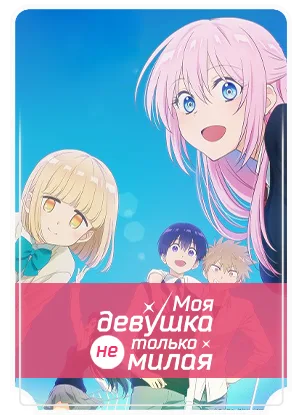

Моя девушка не только милая
Kawaii dake ja Nai Shikimori-san
Описание:
Старшеклассница Шикимори само совершенство: красивая, умная талантливая и даже в спорте показывает отличные результаты. Однако и у такой персоны есть недостаток: если она чего-то хочет, то ни перед чем не остановится, пока не добьётся своего. Эта сторона девушки иногда пугает окружающих, но только не её парня. В глазах мягкого и тщедушного Идзуми Шикимори просто идеал - её сильный характер разжигает огонь в сердце юноши. Какие трудности ждут эту контрастную парочку и сможет ли Идзуми соответствовать своей потрясающей девушке?Статус:
В работе
Эпизоды:
6 из 12
Сезон:
Весна, 2022
Жанры:
Романтика, Комедия, Школа, Сёнэн
Рейтинг:
16+
Ваши комментарии